(1) Angesichts der allen Verkehrsteilnehmern obliegenden Verpflichtung, die allgemeinen und besonderen Verhaltensvorschriften dieser Verordnung eigenverantwortlich zu beachten, werden örtliche Anordnungen durch Verkehrszeichen nur dort getroffen, wo dies auf Grund der besonderen Umstände zwingend geboten ist.
(1a) Innerhalb geschlossener Ortschaften ist abseits der Vorfahrtstraßen (Zeichen 306) mit der Anordnung von Tempo 30-Zonen (Zeichen 274.1) zu rechnen.
(1b) Innerhalb geschlossener Ortschaften ist abseits der Vorfahrtstraßen (Zeichen 306) mit der Anordnung von Fahrradzonen (Zeichen 244.3) zu rechnen.
(2) Regelungen durch Verkehrszeichen gehen den allgemeinen Verkehrsregeln vor. Verkehrszeichen sind Gefahrzeichen, Vorschriftzeichen und Richtzeichen. Als Schilder stehen sie regelmäßig rechts. Gelten sie nur für einzelne markierte Fahrstreifen, sind sie in der Regel über diesen angebracht.
(3) Auch Zusatzzeichen sind Verkehrszeichen. Zusatzzeichen zeigen auf weißem Grund mit schwarzem Rand schwarze Sinnbilder, Zeichnungen oder Aufschriften, soweit nichts anderes bestimmt ist. Sie sind unmittelbar, in der Regel unter dem Verkehrszeichen, auf das sie sich beziehen, angebracht.
(4) Verkehrszeichen können auf einer weißen Trägertafel aufgebracht sein. Abweichend von den abgebildeten Verkehrszeichen können in Wechselverkehrszeichen die weißen Flächen schwarz und die schwarzen Sinnbilder und der schwarze Rand weiß sein, wenn diese Zeichen nur durch Leuchten erzeugt werden.
(5) Auch Markierungen und Radverkehrsführungsmarkierungen sind Verkehrszeichen. Sie sind grundsätzlich weiß. Nur als vorübergehend gültige Markierungen sind sie gelb; dann heben sie die weißen Markierungen auf. Gelbe Markierungen können auch in Form von Markierungsknopfreihen, Markierungsleuchtknopfreihen oder als Leitschwellen oder Leitborde ausgeführt sein. Leuchtknopfreihen gelten nur, wenn sie eingeschaltet sind. Alle Linien können durch gleichmäßig dichte Markierungsknopfreihen ersetzt werden. In verkehrsberuhigten Geschäftsbereichen (§ 45 Absatz 1d) können Fahrbahnbegrenzungen auch mit anderen Mitteln, insbesondere durch Pflasterlinien, ausgeführt sein. Schriftzeichen und die Wiedergabe von Verkehrszeichen auf der Fahrbahn dienen dem Hinweis auf ein angebrachtes Verkehrszeichen.
(6) Verkehrszeichen können an einem Fahrzeug angebracht sein. Sie gelten auch während das Fahrzeug sich bewegt. Sie gehen den Anordnungen der ortsfest angebrachten Verkehrszeichen vor.
(7) Werden Sinnbilder auf anderen Verkehrszeichen als den in den Anlagen 1 bis 3 zu den §§ 40 bis 42 dargestellten gezeigt, so bedeuten die Sinnbilder:
Kraftwagen und sonstige mehrspurige Kraftfahrzeuge | Kraftfahrzeuge mit einer zulässigen Gesamtmasse über 3,5 t, einschließlich ihrer Anhänger, und Zugmaschinen, ausgenommen Personenkraftwagen und Kraftomnibusse | Radverkehr |
|
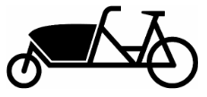 Fahrrad zum Transport von Gütern oder Personen – Lastenfahrrad |
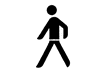 Fußgänger | 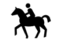 Reiter |
|
Viehtrieb |
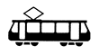 Straßenbahn | Kraftomnibus |
|
Personenkraftwagen |
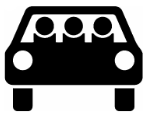 Personenkraftwagen oder Krafträder mit Beiwagen, die mit mindestens drei Personen besetzt sind – mehrfachbesetzte Personenkraftwagen |
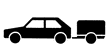 Personenkraftwagen mit Anhänger |
|
Lastkraftwagen mit Anhänger |
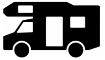 Wohnmobil |
Kraftfahrzeuge und Züge, die nicht schneller als 25 km/h fahren können oder dürfen |
|
Krafträder, auch mit Beiwagen, Kleinkrafträder und Mofas |
Mofas |
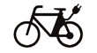 Einsitzige zweirädrige Kleinkrafträder mit elektrischem Antrieb, der sich auf eine bauartbedingte Geschwindigkeit von nicht mehr als 25 km/h selbsttätig abregelt – E-Bikes |
|
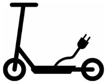 Elektrokleinstfahrzeug im Sinne der Elektrokleinstfahrzeuge-Verordnung (eKFV) |
Gespannfuhrwerke |
(8) Bei besonderen Gefahrenlagen können als Gefahrzeichen nach Anlage 1 auch die Sinnbilder "Viehtrieb" und "Reiter" und Sinnbilder mit folgender Bedeutung angeordnet sein:
Schnee- oder Eisglätte | Steinschlag | Splitt, Schotter |
Bewegliche Brücke | 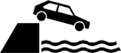 Ufer | 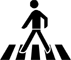 Fußgängerüberweg |
Amphibienwanderung | Unzureichendes Lichtraumprofil | Flugbetrieb |
(9) Die in den Anlagen 1 bis 4 abgebildeten Verkehrszeichen und Verkehrseinrichtungen können auch mit den im Verkehrszeichenkatalog dargestellten Varianten angeordnet sein. Der Verkehrszeichenkatalog wird vom Bundesministerium für Verkehr und digitale Infrastruktur im Verkehrsblatt veröffentlicht.
(10) Zur Bevorrechtigung elektrisch betriebener Fahrzeuge kann das Sinnbild
als Inhalt eines Zusatzzeichens angeordnet sein. Zur Unterstützung einer Parkflächenvorhaltung für elektrisch betriebene Fahrzeuge kann das Sinnbild zusätzlich auf der Parkfläche aufgebracht sein. Elektrisch betriebene Fahrzeuge sind die nach § 11 Absatz 2 und 4, jeweils auch in Verbindung mit Absatz 5, der Fahrzeug-Zulassungsverordnung gekennzeichneten Fahrzeuge.
(11) Zur Parkbevorrechtigung von Carsharingfahrzeugen kann das Sinnbild
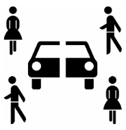
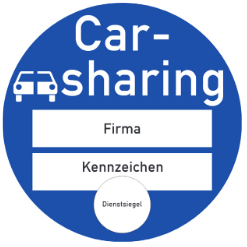